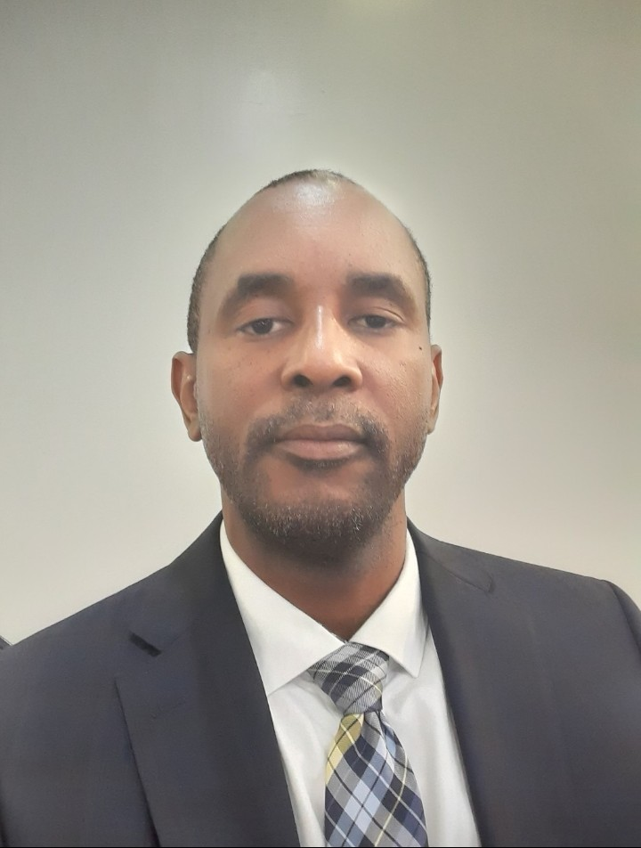

Dr. Feleke Zewge Beshah
Dr Feleke Zewge Beshah is Associate Professor of Environmental Engineering and Founding Director of the Africa Centre of Excellence for Water Management (ACEWM) based at Addis Ababa University in Ethiopia. He obtained his BSc Degree in Chemistry from Addis Ababa University in 1988 and MSc and PhD Degrees in Environmental Engineering from the Gunma University of Technology in Japan in 1998 and 2001, respectively. He was a Visiting Scientist at the Department of Chemical Technology, the Delft University of Technology in The Netherlands in 2006 and a research scholar at the Department of Civil Engineering and Environmental Science, The University of Oklahoma in 2014. He has supervised more than 70 MSc Students and Supervised/supervising more than 15 PhD students. He has published more than 80 papers on reputable international journals. He is National Coordinator of the NORHEAD Project and NORPART Project representing Addis Ababa University which are funded by NORAD. Formerly, he was Manager of the National Fluorosis Mitigation Program under the Ministry of Water, Irrigation and Energy of Ethiopia from 2009 to 2014. He has been Dean for Research and Technology Transfer at the College of Natural and Computational Sciences of Addis Ababa University.
Learn more

Dr. Sidy Ba
Sidy Ba is an Associate Professor at the National School of Engineers Abderhamane Baba Toure (ENI-ABT) of Bamako, Mali and the Founding Head of the Laboratory of Chemical & Environmental Engineering. He earned a PhD in chemical engineering from the University of Sherbrooke (Quebec, Canada) and a M.Sc. in environmental engineering from the Center for Biofilm Engineering (CBE) within Montana State University-Bozeman (MT, USA). He did his bachelor’s in civil/hydraulic engineering at ENI-ABT and a post-graduate in water resources mobilization at the International Institute of Water and Energy (2iE) of Ouagadougou, Burkina Faso. His research encompasses pollution and treatment of waters. More specifically, he works on the applications of Nature-Based Solutions (NBS) such as enzymes and contructed wetlands to remediate contaminants of (re)emerging concerns such as antibiotics in aquatic matrices. His research interests also include membrane technologies and processes for water and wastewater treatments, and Water, Sanitation and Hygiene in developingng countries. He has published/coauthored several papers in top-tier environmental journals, a book and a patent. Dr. Ba is a founding-member of the African Membrane Society, a fellow of the African Scientific Institute (San Francisco, USA) and a fellow of the Regional Water, Environment, Sanitation Center Kumasi (RWESCK), a Center of Excellence in Ghana and an active member Sidy Ba is an Associate Professor at the National School of Engineers Abderhamane Baba Toure (ENI-ABT) of Bamako, Mali and the Founding Head of the Laboratory of Chemical & Environmental Engineering. He earned a PhD in chemical engineering from the University of Sherbrooke (Quebec, Canada) and a M.Sc. in environmental engineering from the Center for Biofilm Engineering (CBE) within Montana State University-Bozeman (MT, USA). He did his bachelor’s in civil/hydraulic engineering at ENI-ABT and a post-graduate in water resources mobilization at the International Institute of Water and Energy (2iE) of Ouagadougou, Burkina Faso. His research encompasses pollution and treatment of waters. More specifically, he works on the applications of Nature-Based Solutions (NBS) such as enzymes and contructed wetlands to remediate contaminants of (re)emerging concerns such as antibiotics in aquatic matrices. His research interests also include membrane technologies and processes for water and wastewater treatments, and Water, Sanitation and Hygiene in developingng countries. He has published/coauthored several papers in top-tier environmental journals, a book and a patent. Dr. Ba is a founding-member of the African Membrane Society, a fellow of the African Scientific Institute (San Francisco, USA) and a fellow of the Regional Water, Environment, Sanitation Center Kumasi (RWESCK), a Center of Excellence in Ghana and an active member
Learn more